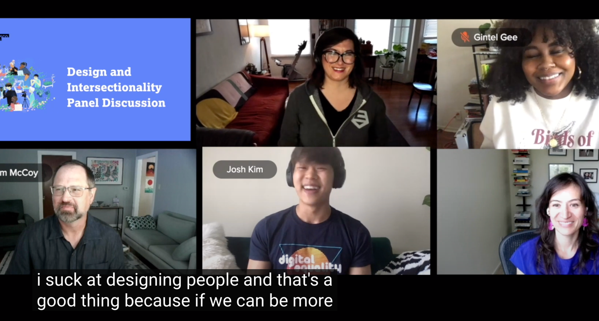

-
*Glances at AI*.... ah shit, here we go again. I partnered with Dave Sukharan to give some students a pragmatic, actionable start to ethics.

-
Spoiler alert, inclusion ain't enough. We need justice. Maureen and I shared how to avoid exclusive patterns we've seen in research.

-
I partnered with carbon five on a panel exploring intersectionality in design. And seriously. Y'all really gotta stop it with the convenience sampling.

Speaking
Email me for rates and availability, but highkey I can help you find someone else that's not a cis dude like me.


Experience, quirks, and topics
I've given workshops and talks from universities to international organizations. I usually bring a friend or two.
For all my talks, check out my resume.
-
Design Ethics 🧭
I've been invited to curate assignments and resources on AI and design ethics for the University of Virginia.
-
Accessibility 💙
I've provided training to the US Digital Service on how the government can better practice accessibility beyond compliance.
-
Inclusive Research 🫰🏽
I've spoken internationally on intersectional research methods and design justice at Inclusive Design 24.